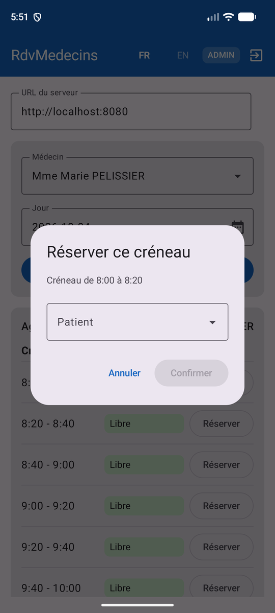

6. Chapitre 5 - Exécuter l’application : émulateur, téléphone, APK
6.1. Une seule cible : Android
Le chapitre 5 du cours Flutter montrait comment un même code source se compile vers trois familles de cibles : mobile, bureau et web. Rien de tel ici : le client de ce document est une application Android, et seulement Android. En échange, il utilise directement les outils et les bibliothèques de la plateforme ([Gradle], [Android Studio], [ViewModel], [SharedPreferences]...), sans couche d’abstraction. La dernière section de ce chapitre indique ce qu’il faudrait pour viser aussi iOS, le bureau et le web.
Les commandes de ce chapitre utilisent l’outil [adb] et le wrapper Gradle. Sous Windows, si les dossiers [platform-tools] et [emulator] du SDK ne sont pas dans le [PATH], remplacer [adb] par [& "$env:LOCALAPPDATA\Android\Sdk\platform-tools\adb.exe"] (cf. chapitre 1).
6.2. Cible émulateur
C’est la cible utilisée tout au long du chapitre 4. Depuis Android Studio : choisir l’émulateur dans la liste des appareils, puis [Run]. En ligne de commande, dans le dossier du projet :
6.2.1. Le piège réseau : localhost ne désigne plus le PC de développement
C’est LE détail à connaître pour le mobile, sans rapport avec Kotlin ni avec Compose : [localhost] (ou [127.0.0.1]), dans le champ « URL du serveur », désigne TOUJOURS la machine qui exécute le code. Or l’émulateur est une machine VIRTUELLE distincte du PC de développement où tourne le serveur [NestJS], même si les deux semblent « être sur le même ordinateur ». Deux solutions :
- l’adresse spéciale [http://10.0.2.2:8080] : propre à l’émulateur Android officiel, elle est redirigée vers le [localhost] de la machine hôte. C’est la valeur par défaut du champ « URL du serveur » (cf. [SettingsService.kt]) ;
- la commande [adb reverse tcp:8080 tcp:8080], puis l’URL [http://localhost:8080]. [adb reverse] crée un tunnel : toute connexion de l’appareil vers SON port 8080 est transmise, par [adb], au port 8080 de l’ordinateur. Le tunnel disparaît quand l’émulateur s’arrête (ou que le serveur [adb] redémarre) : il faut alors relancer la commande.
La première solution est la plus simple. Pourtant, sur le poste qui a servi à écrire ce document, elle ne fonctionnait pas : la connexion à [10.0.2.2:8080] échouait au bout du délai d’attente de 10 secondes, alors que le serveur répondait normalement sur [localhost]. Ce genre de problème dépend de la configuration réseau du PC (pare-feu, VPN, logiciels de virtualisation) : [adb reverse] le contourne, puisque le trafic passe alors par [adb] et non par le réseau virtuel de l’émulateur. Le message affiché par l’application (« Login ou mot de passe incorrect. ») ne dit pas grand-chose ; la cause exacte se lit dans le journal d’Android, grâce aux appels [Log.w(...)] du client (onglet [Logcat] d’Android Studio, filtré sur [RdvMedecins], ou commande [adb logcat -s RdvMedecins]) :
La commande [adb reverse] et l’URL [http://localhost:8080] (mémorisée ensuite par [SettingsService]) ont résolu le problème : c’est la configuration utilisée pour toutes les captures du chapitre 4.
6.3. Cible téléphone
Le téléphone préparé au chapitre 1 (options pour les développeurs, débogage USB) apparaît dans [adb devices], et dans la liste des appareils d’Android Studio : il s’utilise exactement comme l’émulateur ([Run], ou [gradlew installDebug]). Seule l’URL du serveur change :
- téléphone relié par câble USB : la commande [adb reverse tcp:8080 tcp:8080] fonctionne aussi avec un vrai téléphone, et l’URL [http://localhost:8080] atteint alors le serveur du PC à travers le câble. C’est la solution la plus simple ;
- téléphone sur le même réseau Wi-Fi que le PC : utiliser l’adresse IP LOCALE du PC sur ce réseau (par exemple [http://192.168.1.48:8080] ; la commande [ipconfig] l’affiche sous Windows), jamais [localhost] ni [10.0.2.2], qui désignent l’un et l’autre le téléphone lui-même dans ce cas. Le pare-feu du PC doit alors autoriser les connexions entrantes sur le port 8080 (Windows le propose au premier lancement de Node.js).
Le serveur [NestJS] écoute sur toutes les interfaces réseau du PC ([0.0.0.0]) : il n’y a rien à changer de son côté.
6.4. Deux restrictions propres au mobile
6.4.1. Le trafic HTTP en clair
Depuis Android 9 (API 28), une application ne peut plus, par défaut, échanger en HTTP « en clair » ([http://], non chiffré) : seul [https://] est autorisé. Le serveur de ce cours écoutant en HTTP simple, le manifeste du client déclare l’exception [android:usesCleartextTraffic="true"] (cf. chapitre 4). Sans elle, toute requête échoue avec l’exception [CLEARTEXT communication to 10.0.2.2 not permitted by network security policy].
Cette autorisation vaut pour TOUS les serveurs. Une configuration plus fine est possible, avec un fichier [res/xml/network_security_config.xml] qui n’autorise le HTTP en clair que pour certains noms d’hôte :
Le fichier est déclaré dans le manifeste par l’attribut [android:networkSecurityConfig="@xml/network_security_config"] de la balise [<application>]. Ce document ne l’utilise pas : l’adresse IP d’un PC sur un réseau Wi-Fi n’est pas connue à l’avance. Dans les deux cas, ces réglages ne concernent que le développement : en production, le serveur serait exposé en [https://] (par exemple derrière un « reverse proxy » comme Nginx), ce qui rendrait toute exception inutile.
6.4.2. La permission d’accès au réseau
Sans la ligne [<uses-permission android:name="android.permission.INTERNET" />] du manifeste, la première requête échoue, avec une exception [SocketException: socket failed: EPERM (Operation not permitted)] (ou [SecurityException: Permission denied (missing INTERNET permission?)] quand l’URL contient un nom d’hôte). C’est un oubli fréquent : le modèle de projet d’Android Studio ne la déclare pas.
6.5. La rotation de l’écran
Tourner le téléphone (ou l’émulateur, avec les boutons de rotation de sa barre latérale) DÉTRUIT puis RECRÉE l’activité (cf. chapitre 3). Le client y résiste grâce à trois choix faits au chapitre 4 :
- les services sont construits par [RdvMedecinsApplication], qui n’est pas recréée ;
- l’état de l’écran (médecins, patients, agenda, créneau en cours de réservation) est dans [AppViewModel], qu’Android conserve ;
- les petits états d’interface (login en cours de saisie, médecin et jour choisis, patient choisi dans la boîte de dialogue) sont mémorisés avec [rememberSaveable].
Les captures suivantes ont été prises avec la boîte de dialogue de réservation ouverte : en mode paysage, puis de retour en mode portrait. La boîte de dialogue, l’agenda, le médecin et le jour choisis sont toujours là :


En mode paysage, l’écran fait plus de 600 dp de large : la barre de titre affiche le titre complet et le nom de l’utilisateur, et [DoctorDayPicker] dispose ses trois éléments sur une seule ligne :

Pour mesurer l’intérêt de ces choix, on peut faire l’essai inverse : remplacer, dans [App.kt], [val vm = viewModel { AppViewModel(auth, rdv) }] par [val vm = remember { AppViewModel(auth, rdv) }]. Après une rotation, l’agenda a disparu et il faut refaire la recherche : [remember] ne survit pas à la recréation de l’activité.
6.6. Un écran étroit : le piège de la mise en page
Un téléphone en portrait ne fait qu’environ 400 dp de large. La première version de [AgendaView.kt], comme celle du client Flutter, a été piégée par cette largeur. Chaque ligne de l’agenda répartissait la largeur disponible entre ses trois colonnes avec des poids fixes - 30 % pour l’horaire, 45 % pour le statut, 25 % pour le bouton ([Modifier.weight(0.25f)]). Sur le téléphone, 25 % de la ligne ne suffisaient pas au libellé « Réserver », tronqué en « Rése » :


La correction (capture de droite, cf. [AgendaView.kt] au chapitre 4) : le bouton n’a plus de poids et prend la largeur de son texte ; l’horaire a une largeur fixe ; le statut prend la largeur restante ([Modifier.weight(1f)]). Deux règles en découlent, les mêmes que pour le client Flutter :
- ne jamais supposer une largeur : soit laisser un élément prendre la taille de son contenu, soit interroger la largeur réellement disponible ([BoxWithConstraints], [LocalConfiguration.current.screenWidthDp]) pour choisir une disposition ;
- tester tôt sur un écran étroit, et dans les deux langues : les libellés anglais (« Book », « Cancel ») sont plus courts que les libellés français, et un défaut peut n’apparaître que dans l’une des deux.
6.7. Produire un APK
[gradlew assembleDebug] (chapitre 1) produit [app/build/outputs/apk/debug/app-debug.apk], une application de « débogage » : signée avec une clé de développement générée automatiquement par Android Studio, elle peut être installée sur un émulateur ou sur un téléphone ([adb install app-debug.apk]), mais pas publiée sur le Play Store. Pour une diffusion réelle :
Une version de production doit être signée avec une clé personnelle, créée une fois pour toutes et conservée précieusement : Android Studio propose pour cela le menu [Build / Generate Signed App Bundle or APK...]. Le Play Store exige en outre une icône, une politique de confidentialité... et un serveur en [https://].
6.8. Et iOS, le bureau, le web ? Kotlin Multiplatform
Le client Flutter du cours produisait, à partir d’un seul code, des applications mobiles, de bureau et web. L’équivalent, dans l’écosystème Kotlin, existe : [Kotlin Multiplatform] (KMP) permet de partager du code Kotlin entre Android, iOS, le bureau (JVM) et le web, et [Compose Multiplatform], de JetBrains, étend Jetpack Compose à ces mêmes cibles. Porter le client de ce document demanderait surtout de remplacer les bibliothèques propres à Android par des équivalents multiplateformes :
- [OkHttp] → [Ktor Client], le client HTTP multiplateforme de JetBrains ;
- [SharedPreferences] → une bibliothèque de stockage clé/valeur multiplateforme (par exemple [DataStore], désormais multiplateforme) ;
- le dossier [assets/] d’Android → les ressources de Compose Multiplatform ;
- [android.util.Log], [Handler] → leurs équivalents multiplateformes (ou des coroutines sur [Dispatchers.Main]) ;
- la classe Application et l’activité restent, mais seulement pour la cible Android : chaque cible a son propre point d’entrée.
Les fonctions @Composable, les classes [@Serializable], les coroutines et même les ViewModel (disponibles en multiplateforme) seraient, eux, conservés presque tels quels. Ce portage dépasse le cadre de ce document.
6.9. Tableau récapitulatif
- émulateur Android - [Run] ou [gradlew installDebug] - URL du serveur : [http://10.0.2.2:8080], ou [adb reverse tcp:8080 tcp:8080] puis [http://localhost:8080] ;
- téléphone par câble USB - [Run] ou [gradlew installDebug] - URL : [adb reverse tcp:8080 tcp:8080] puis [http://localhost:8080] ;
- téléphone en Wi-Fi - [Run] ou [gradlew installDebug] - URL : adresse IP locale du PC, port 8080 ouvert dans le pare-feu ;
- dans tous les cas : permission [INTERNET] et autorisation du HTTP en clair dans le manifeste ;
- diffusion : [gradlew assembleRelease] (APK) ou [bundleRelease] (Play Store), avec une clé de signature personnelle.